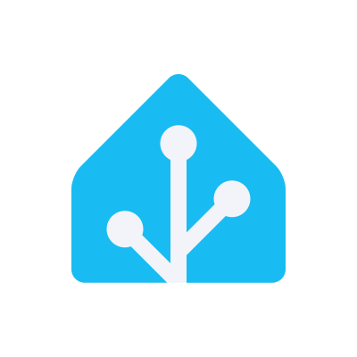
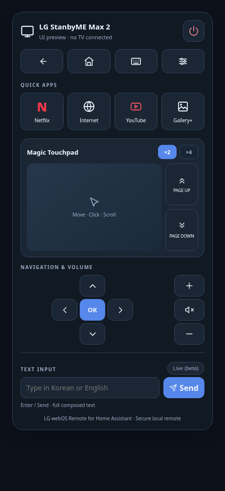

A pointer, not just arrows.
Swipe to move, tap to click, and scroll with two fingers or a mouse wheel. Dedicated Page Up/Down buttons and 1×, 2×, 4× sensitivity make browsing easier.

For Home AssistantTurn your Home Assistant dashboard into a remote you actually want to use. A Magic Touchpad, your favorite apps, and a keyboard. All in one place.
Independent community project. Free and open source.
For compatible LG webOS TVs and Home Assistant OS. Runs on your local network.

01 / THE REMOTE
The everyday controls, with a touchpad for the moments a D-pad isn’t enough.
Swipe to move, tap to click, and scroll with two fingers or a mouse wheel. Dedicated Page Up/Down buttons and 1×, 2×, 4× sensitivity make browsing easier.
Netflix, Internet, YouTube and Gallery+ shortcuts use your TV’s installed apps. Power, volume, mute, Home and navigation stay close at hand.
Send English or Korean text with Enter or Send. Tested in the TV browser; text input depends on the app. Live typing is experimental.
02 / GET CONNECTED
The card is what you see. The Bridge is what talks to your TV. You need both.
Before you start: Home Assistant OS on aarch64 or amd64, an administrator account, a compatible TV, and HACS installed and configured. Keep the TV, Home Assistant and dashboard device on a network where they can reach each other. Container/Core installations have no app store for this guide.
The connection between Home Assistant and your TV.
tv_ip: "YOUR_TV_IP" mac_address: "YOUR_TV_NETWORK_MAC" listen_port: 8788 broadcast_address: "255.255.255.255" auth_token: "YOUR_RANDOM_TOKEN"
Find the TV IP and the active Wi-Fi or Ethernet MAC in the TV’s network settings or router. Use a new random token of at least 40 characters, not a Home Assistant API token. Keep it private.
Run this on a computer with Python. Copy the result privately into the Bridge and card configuration; do not paste it into a chat or screenshot.
python3 -c 'import secrets; print(secrets.token_urlsafe(32))'
Turn on your TV, Start the Bridge, and approve the pairing prompt on the TV. Enable Start on boot in the app’s Info tab.
The remote you’ll add to your dashboard.
Open Settings → Dashboards → Resources and add the URL below as a JavaScript module, once. If Resources is hidden, enable Advanced mode in your user profile. YAML-managed dashboards register this URL with type: module in their resource configuration.
/hacsfiles/ha-webos-remote/ha-webos-remote.js
This is a custom repository, not a default HACS catalog listing. Official HACS instructions
Connect the card to the Bridge and check it works.
Open your dashboard and select Edit → Add card → Manual. Paste the YAML below, replace the placeholders, and save.
type: custom:lg-webos-remote name: Living Room TV url: ws://YOUR_HOME_ASSISTANT_IP:8788 token: "YOUR_RANDOM_TOKEN" sensitivity: 1 scrollSensitivity: 1
Use the Home Assistant IP in the card URL, not the TV IP. The token must exactly match the Bridge’s auth_token. Don’t add the dashboard path or port 8123. “Visual editor not supported” is expected.
Using an HTTPS dashboard? Use a trusted wss:// proxy route. Browsers may block plain ws:// from an HTTPS page. Connection and security notes
PREFER A GUIDED SETUP?
Give it the project context and the installation checklist. An agent with Home Assistant access can help with setup; otherwise, it can guide you through the UI.
Help me install LG webOS Remote for Home Assistant: https://github.com/sonim1/ha-webos-remote Read the current README, docs/COMPATIBILITY.md, docs/UPDATING.md and SECURITY.md first. Use the stable release. Inspect my Home Assistant installation, CPU architecture, HACS, existing Bridge/card installs and HTTP/HTTPS access. This app guide requires Home Assistant OS on aarch64 or amd64. Install BOTH the LG webOS Remote Bridge app and the HACS Dashboard card using the repository above. Ask only for missing setup information. Have me turn on the TV and approve pairing. Generate a random Bridge auth_token locally with at least 40 characters. Configure the TV IP and active interface MAC in the Bridge. Use the Home Assistant host and Bridge port 8788 in the card, with the same token. For HTTPS, use a trusted WSS route. Preserve settings and pairing data. Back up before replacing an install; ask before removing any existing Bridge or changing shared network settings. Never expose tokens, pairing keys or private device details in chat, screenshots or commits. Do not expose the Bridge to the internet or run competing Bridges. Verify card connection, Home, volume, full-screen pointer movement, power-off and Wake-on-LAN separately. Report observed, failed and untested results honestly. If you lack access, give me exact UI steps instead of claiming completion.
03 / YOUR TV
This isn’t limited to StanbyME. It uses LG’s local webOS control protocol, with no model whitelist. Features still depend on your TV, firmware and apps.
Pairing, full-screen pointer movement, click, power-on/off and English/Korean input in the TV browser.
Require the local control API and secure WebSocket port 3001. Individual model support is not guaranteed.
Other StanbyME models are unverified. TVs offering only port 3000, LG NetCast and non-webOS TVs cannot use this release.
Start the Bridge app and check its log. The card URL must point to your Home Assistant host on the Bridge’s port, normally 8788. A turned-off TV should not prevent the card from connecting to a running Bridge. For HTTPS dashboards, check your WSS route.
Power sends Wake-on-LAN when the TV is offline. Use the active network interface’s MAC and enable the TV’s network wake setting where available. Support varies by model and connection. “TV Off · Wake ready” means the Bridge is reachable; it does not guarantee the TV will wake.
Those apps may use custom keyboards that reject external text. English and Korean text insertion were tested in the TV browser. Focus a compatible text field first. Live input is experimental.
Update the Bridge app and HACS card separately, preserve app data and pairing, and reload the dashboard. Do not run an old and new Bridge together. Follow the update and rollback guide when changing installation sources.
No. It’s an independent MIT-licensed community project, unaffiliated with LG Electronics or Home Assistant. Use it on a trusted local network, keep tokens private, and never expose the Bridge directly to the internet. Plain WebSocket traffic is unencrypted. See the security notes and dependency advisory.